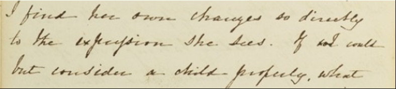

The transcription for this Edition reproduces the text of the original manuscript, currently held in the Special Collections of the Brotherton Library, Leeds UK. Gaskell's journal is contained in a notebook, approximately 4 1/2 by 7 inches, bound with marbled boards. The spine and corners are in calf. The edges of the leaves are also marbled. The paper within the notebook has been gathered throughout in twelves, although the first gathering has only six leaves. As noted by Anita Wilson and J.A.V. Chapple, some gatherings contain the watermark "Harris 1822".
The journal comprises the first approximately 80 pages of the notebook; the remaining pages are blank. The text is written throughout in black ink. The binding of the codex is loose in several places, but the notebook is still in one piece. Apart from the third page in the second entry, from which the top third has been cut away, the manuscript is intact. Gaskell's prose is quite clear and legible throughout, although the ink is fading. The fading has made certain portions of the text difficult to read, and has particularly affected Gaskell's out strokes, punctuation, and the dots on characters that contain them.
The manuscript has been in the possession of Gaskell's descendants since her death. At Gaskell's death in 1865, the journal became the property of Marianne Gaskell (later Holland), the daughter about whom much of the journal is written, and to whom it is dedicated. Marianne Holland and her husband (and cousin), Thurstan Holland, had seven children, of whom three — William Edward Thurstan Holland, Florence Holland, and Brian Holland — survived childhood. The journal manuscript was passed on to Marianne's oldest son, William Edward Thurstan Holland, born in 1867. Marianne's younger son, Brian Holland, and her daughter, Florence Holland, authorized the publication of the 1923 edition of the journal (Shorter). After William Edward Thurstan Holland, the manuscript was passed to his only daughter, Margaret Evelyn Averia, called "Daysie," who married Clifford Trevor Jones. Margaret's only daughter, Elizabeth Rosemary, received the manuscript after this. Rosemary (later Mrs. Trevor-Dabbs) saw Gaskell begin to gain popularity again during her lifetime, and was involved in several key Gaskell projects, including the formation of the Gaskell Society and the restoration of Gaskell's home, as well as the publication of Gaskell's letters[1]. It was Mrs. Trevor-Dabbs who placed the journal on permanent loan to the Brotherton Special Collections, and authorized the 1996 print edition, produced by Anita Wilson and J.A.V. Chapple, as well as the 2006 edition by Joanne Shattock. After Mrs. Trevor-Dabbs' death in 2010, the journal became the property of Mrs. Sarah Prince, by whose gracious permission this new digital Edition has been authorized. Mrs. Prince has also written a concise version of the journal's provenance in a 2010 article in the Gaskell Society Newsletter.
Previous editions of the journal have generally also adopted a policy of retaining the characteristics of the manuscript, although each has adopted some processes of regularization. The first printed edition of the journal, published in a limited 50-copy run in 1923 by Clement Shorter, was entitled ' "My Diary": The Early Years of My Daughter, Marianne' by the editor. Shorter's edition differs from the manuscript primarily in its handling of Gaskell's punctuation, and in his decision to regularize spellings throughout. Shorter's changes were made silently. Although the edition offers no statement of editorial policy, a careful reading suggests that Shorter's goal was to provide a clean, reading copy which adhered to contemporaneous spelling and punctuation. Shorter removed commas he believed were unnecessary, for example deleting Gaskell's comma from the phrase "I had no idea children at her age, made such continued noises".[2] Shorter also adopted regularized spellings, for example "ankles" for "ancles," and made corrections to Gaskell's grammar, changing it's to its in the dedication page. He also added commas where he deemed necessary, as well as regularizing the datelines at the heads of each entry. Shorter's edition italicizes the words Gaskell underlined in the manuscript.
The 1996 edition, Private Voices: The Diaries of Elizabeth Gaskell and Sophia Holland, edited by Anita Wilson and J.A.V. Chapple, similarly adhered to a conservative policy of editing which involved, in the editors' words: "making only very minor changes. Superscript letters have been lowered, some full stops or dashes silently added and single quotation marks used instead of double".[3] Chapple and Wilson similarly changed Gaskell's underlining to italics and also regularized Gaskell's abbreviation of Marianne's name to MA. Gaskell's few self-corrections within the manuscript, which are usually struck through with a squiggled line, were identified in the Wilson and Chapple edition via endnotes.
Joanne Shattock's 2006 edition, published as part of the Pickering Master's Edition of Gaskell's Works, adheres the most closely to Gaskell's original text, retaining Gaskell's superscripts, punctuation, and spellings. Shattock regularized Gaskell's abbreviation for Marianne to M.A. and has also changed underlining to italics. Shattock used symbols to denote Gaskell's deletions, insertions, and gaps, and employed brackets to mark her own editorial alterations within the manuscript.
The transcription was hand-encoded from photographic images of the manuscript obtained through the gracious generosity of Kristen Mapes. Assistant Director of Digital Humanities at Michigan State University. Transcription work was begun with the creation of a Gaskell "alphabet" — a table of representative samples of Gaskell's handwriting for each character, drawn from the journal itself, now available on the website — which was used as a tool to assist in transcribing difficult to read words.
Gaskell's chirography
is remarkably clear and quite consistent, however in the event of unclear
characters, consultation was supplemented by comparison with the high-quality IIIF
images made available through the Brotherton Special Collections site, and
additionally through in-person scrutiny of the manuscript during a research trip to
the UK made in the summer of 2018. Where doubt remained, I have adopted a policy
of submitting to the wisdom of previous editors, and have found no reason in such
cases to substantially change the transcription offered in these editions. In nearly
every case, this new edition adheres to the faithful transcriptions made in 1996 by
Anita Wilson and J.A.V. Chapple and in 2006 by Joanne Shattock. The rare occasions
in which this transcription differs from previous editions have been notated in the
Editing Policy
.
In three respects, this digital Edition does differ markedly from previous editions: in the provision of digitally enabled multiple reading variants; in my decision to preserve Gaskell's use of underlining throughout the manuscript, in contrast to the previous editors' policy of rendering all underlined text in italics, and in my choice to retain Gaskell's own terminology of "journal." The representation of the journal complete with its own idiosyncrasies has been the central driving principle of this edition.
The digital medium makes possible heretofore impossible levels of comparison between the manuscript pages and the transcription of the journal. XML encoding has also enabled the edition to allow multiple reading variants for the text, to allow the reader to toggle between viewing archaic characters and normalized spelling, for example. The choice to maintain Gaskell"s underlining is twofold: first, it preserves Gaskell's own handwriting; second, it provides greater clarity for reader comparison between the transcription and the manuscript images which are offered for the first time in this digital edition. The decision to return to Gaskell's own use of the term "journal," which has been made in contradistinction to all previous published editions of the text, is intended first and foremost to adhere as much as possible to Gaskell's own textual choices.
In one case I have disagreed with the transcription provided by Wilson and Chapple in their 1996 edition. Shortly before the cut-away leaf in the second entry (August 4, 1835), a word occurs which is struck through. Wilson and Chapple note this word as "we," changed from "I". On close inspection of the manuscript, however, it is apparent that the strikethrough, which Gaskell usually writes as a horizontally squiggly line, is passing through "we" rather than "I".
In this case, I concur with Joanne Shattock in determining that Gaskell changed "we" to "I", writing: "If weI could but consider a child properly, what a beautiful safe-guard from evil would it"s presence be" (Journal, August 4, 1835). Notably, this change is consistent with Gaskell's introspective writing throughout the journal; she critiques herself frequently, and comments on the responsibility which weighs heavily on her as a mother. Changing the pronoun to "we" would have been an uncharacteristically public gesture, given the context and tone of the rest of the journal.
Gaskell never titled her manuscript, although she refers to it within the text as a "journal," or as a "book." In 1923, Clement Shorter made the decision to publish the journal with the title "My Diary: the Early Years of My Daughter Marianne." Shorter's choice to include only Marianne's name, and not Meta's, may have been made for brevity, or may have been influenced by the fact that two of Marianne's children, Bryan Thurstan Holland and Florence Evelyn Holland, were the owners of the copyright at the time. Shorter"s decision, however, has become established practice in all print editions since his own. In 1996, Anita Wilson and J.A.V. Chapple entitled their edition Private Voices: The Diaries of Elizabeth Gaskell and Sophia Holland. Joanne Shattock' edited volume, which contains Gaskell's "Journalism, Early Fiction and Personal Writings," continues this policy, choosing simply "The Diary" as a title.
When Gaskell began recording her daughters' development in March, 1835, she chose to call her text both "this book" and "my little journal" (Journal Dedication, March 10 1835). Scholars of diaries and journals have discussed the distinction in terms often, and without a universally clear solution. Prominent diary scholar Philippe LeJeune, in his essay, "The Practice of Writing A Diary", offers a summation of linguistically based terms: "For the moment, let's set aside the French expression journal intime (a diary). In German, it is simply referred to as Tagebuch. In English, it is either a diary or a journal. In Spanish, Portuguese, and Italian, it is a diario."[4] English is the only language for which readers are given a choice; LeJeune actively avoids discussing the relative merit or applicability of the two terms, and simply delegates the choice to his readers in an ongoing refusal to fix meaning.
Throughout history, life writing scholars have attempted to theorize the distinction between journal and diary but have failed to produce a generally accepted terminology. The most thorough discussions of the scholarly distinction between the terms diary and journal have been given by Cinthia Gannett in her Gender and the Journal: Diaries and Academic Discourse (1992) and more recently, by Rebecca Steinitz in her Time, Space, and Gender in the Nineteenth-Century British Diary (2011). Steinitz traces the discourse back to early scholars, including Fothergill and Ponsonby, to the present moment. Gannett cites the earliest critical study of diaries, Richard Fothergill's Private Chronicles: A Study of English Diaries (1974), stating that "the journal or diary as we know it today evolved from the 'coalescence of a number of pre-diary habits into a form that exceeds its component elements.'"[5] These forms of writing include "public journals, travel journals, journals of conscience or spiritual journals, and journals of personal memoranda."[6] According to Gannett, "both journal and diary come from similar Latin roots meaning day or daily,' and 'Diary was used synonymously with journal for hundreds of years."[7] In an ambiguous position that echoes that of LeJeune, Fothergill takes a similar position, writing that the "usage" of diary "appears to be indistinguishable from that of 'journal.'"[8] His comment is echoed by Arthur Ponsonby, who wrote, "as it is, the words are used quite indiscriminately."[9]
Although they have similar roots and histories, however, scholars have insisted at times on distinctions. Twenty years after Ponsonby, William Gass wrote that a diary "should be filled with facts, with jots, with jogs to the memory," and a journal lets "facts diminish in importance"; they are "replaced by emotions, musings, thoughts."[10] Gass's assessment suggests that the journal is more reflective. Gass's opinion appears reversed by William Matthews, who claimed that "the 'dull' journal has a plan, purpose, and audience, while the diary is personal, unsystematic, and much more interesting."[11] The purpose and audience Matthews ascribes to the journal might be partially explained by its having been a more inclusive term historically; according to Gannett, "the term diary has perhaps not been used to cover quite as wide a range of public and commercial writing practices as the term journal," since, she explains, "journal" had been often used to "refer to bookkeeping and daily ledgers" as well as "transactions by public bodies."[12] Expanding on her thorough research into the terms' history, Gannett herself connects the term diary with the feminine, writing of the term: "diary, which is denotatively similar, but which has come to be associated with connotations such as overly personal, confessional, trivial, and as I will argue, feminine."[13] Gaskell's journal has historically been published by its editors as a "diary." Although it bears some of the decidedly feminine traits that Gannett associates with the form, Gaskell's journal also bears many of the reflective and descriptive traits of journals. In practice, I suggest that Gaskell's use of the term "journal" most closely aligns with the more recent distinction made by Alexandra Johnson: "For purists, a diary is a daily factual record, dated and chronological. A journal is kept more fitfully and for deeper reflection. One records, the other reflects."[15]
Throughout history, the term "diary" has been taken to align more closely with regularity, and has been more narrowly and specifically defined as a document of the self, while journals have been used to record not only personal reflections, but also financial and club transactions, or travel descriptions. While the terms bear many similarities, the journal tends to be viewed as a flexible form, which rewards variations of thought and purpose. I take diary to refer to a genre or sub-genre of autobiographical writing characterized by the recording of regular, often daily, observations, while a journal refers to a sub-genre in which the author writes regular observations with a greater sense of self-reflection, as well as greater flexibility with regard to expressed intentions or content. To this end, this edition preserves Gaskell's use of the term "journal," and in doing so, emphasizes the varieties of purpose for which writers have used the practice of keeping a personal writing habit, as well as the complex set of aims and voices at work within Gaskell's text.
The increasing popularity of autobiographical writing, and more especially, the variety it takes on within the Victorian period, also reflects important changes in Victorian ideology, beginning most obviously with the focus on the liberal individual. The immense production of life writing in the period suggests that Victorians were no longer content to let others write—and thus shape—the stories of their lives. Rather, through their engagement in life writing across forms, Victorians were claiming agency in crafting their own posthumous reputations and legacies. The function of the diary as a regulatory tool has most recently been brilliantly theorized by Anne Marie Millim, who writes "the diary, which functions as a site for self-examination and as a tool for self-management, allows the selected diarists to construct and assert their authorship before the publication of their work."[16] The same impulse to use the diary to shape a public self has been noted by many scholars of diary, in texts that comprise individuals of all genders and classes. Indeed, rather than merely accepting the notion which predominates in Victorian literature, of the diary existing as "my second self, in this book, if I have no one else to hear me," Victorians seemed to be increasingly aware that by engaging in any form of life writing, they were actively crafting a narrative that might reach a far broader audience than only their second selves.[17]
In this regard, Gaskell's choice of "journal" seems the most apt, and in keeping with the Editing policy of maintaining the integrity of the document, this edition has elected to retain her own terminology as well. Gaskell's journal is written in starts and pauses over several years. Taken together, the entries average out to about one every four months. The journal is also quite capacious in content: encompassing Marianne's physical and emotional development, Gaskell's own fears and choices as a mother, as well as family events as they occurred. The journals are lengthy and reflective, rather than cursory and factual, as Gaskell herself notes: "I have written a great deal tonight, and very unconnectedly" (Journal 10 March, 1835). The choice of "journal" for this new Digital Edition is meant to emphasize the "fitful" and "reflective" nature of the text, and to invite new conversations surrounding Gaskell's life writing.
[1] Chapple, John. Elizabeth Gaskell: The Early Years. p. 116.
[2] Shorter, Clement, Ed. My Diary: The Early Years of My Daughter, Marianne. 1923. By Elizabeth Gaskell. Special Collections: John Rylands Library, Manchester. Accessed: August 1-2, 2017.
[3] Chapple, J.A.V. and Anita Wilson, Eds. Private Voices: The Diaries of Elizabeth Gaskell and Sophia Holland. New York: St. Martin’s Press, 1996.
[4] Ben Amos, Batsheva and Dan Ben-Amos, Eds. The Diary: The Epic of Everyday Life. Bloomington: Indiana UP, 2020. p. 27
[5] Gannett, Cinthia. Gender and the Journal: Diaries and Academic Discourse. Albany: State U of New York, 1992. p. 105.
[6] Gannett, p. 105
[7] Gannett, p. 107
[8] Steinitz, Rebecca. Time, Space, and Gender in the Nineteenth-Century British Diary. New York: Palgrave Macmillan, 2012. p. 8
[9] Steinitz, p. 8.
[10] Steinitz, p. 8.
[11] Steinitz, p. 8.
[12] Gannett, p. 107.
[13] Steinitz, p. 8.
[14] Johnson, Alexandra. p. 13.
[15] Steinitz, p. 8.
[16] Millim, Anne-Marie. The Victorian Diary: Authorship and Emotional Labour. Farnham: Ashgate, 2013. p. 2.
[17] Delafield, Catherine. Women’s Diaries as Narrative in the Nineteenth-Century Novel. Aldershot, Ashgate, 2009. p. 1.
Maintained by Melissa J. Klamer (klamerme@msu.edu)
This project is built with
the oXygen XML editor.
Distributed under a Creative Commons
Attribution-NonCommercial-NonDerivs License.